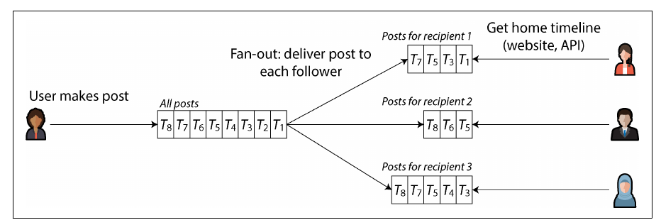
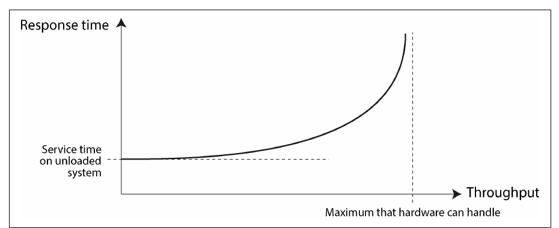
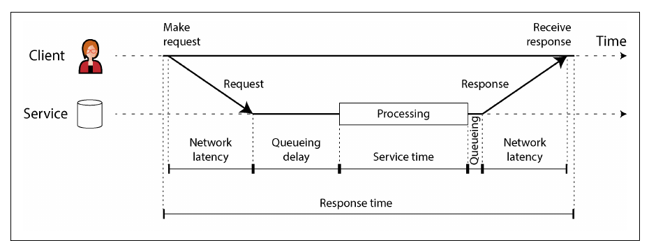
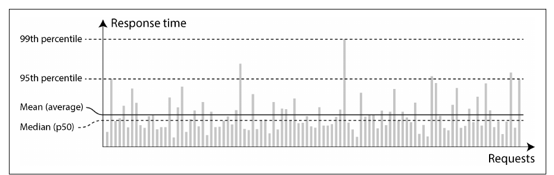
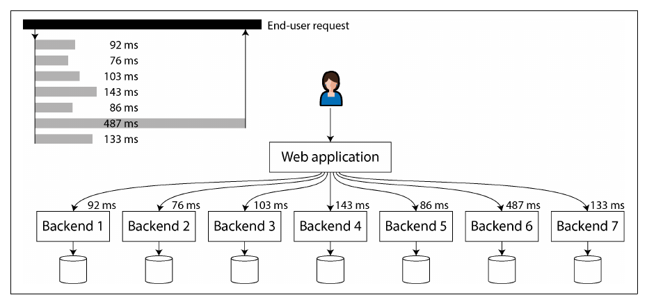

Chapter 2 · pp. 33–64
Defining Nonfunctional Requirements
Designing Data-Intensive Applications, 2nd Edition
Beyond what an application does, it must be fast enough, keep working when parts break, cope with growth, and stay easy to change. The chapter makes these nonfunctional requirements precise — performance, reliability, scalability, maintainability — starting from a case study of social-network home timelines that shows how a read-heavy feature can be redesigned by moving work from reads to writes. It argues for measuring response time as a distribution (percentiles, not averages), distinguishes faults from failures, and treats scalability as the question "if load grows in a particular way, what are our options?" rather than a yes/no property.
The chapter’s own outline (from the book’s table of contents)
- Case Study: Social Network Home Timelines — p. 34
- Representing Users, Posts, and Follows — p. 34
- Materializing and Updating Timelines — p. 35
- Describing Performance — p. 37
- Latency and Response Time — p. 38
- Average, Median, and Percentiles — p. 40
- Use of Response Time Metrics — p. 41
- Reliability and Fault Tolerance — p. 43
- Fault Tolerance — p. 43
- Hardware and Software Faults — p. 44
- Humans and Reliability — p. 47
- Scalability — p. 49
- Understanding Load — p. 50
- Shared-Memory, Shared-Disk, and Shared-Nothing Architectures — p. 51
- Principles for Scalability — p. 52
- Maintainability — p. 52
- Operability: Making Life Easy for Operations — p. 53
- Simplicity: Managing Complexity — p. 54
- Evolvability: Making Change Easy — p. 55
- Summary — p. 56
From the book
Introduction
Functional requirements say what the app does; nonfunctional requirements — fast, reliable, secure, compliant, maintainable — are often unwritten but just as important: an unbearably slow or unreliable app “might as well not exist” (p. 33). This chapter covers performance, reliability, scalability and maintainability.
From the book
Case study: social network home timelines
An X/Twitter-style network (pp. 34–36). Assumptions: 500 million posts/day ≈ 5,800 posts/s, spiking to 150,000/s; the average user follows 200 and has 200 followers — but a few celebrities have over 100 million. Data lives in three relational tables: users, posts, follows (Figure 2-1).
SELECT posts.*, users.* FROM posts
JOIN follows ON posts.sender_id = follows.followee_id
JOIN users ON posts.sender_id = users.id
WHERE follows.follower_id = current_user
ORDER BY posts.timestamp DESC
LIMIT 1000The home-timeline query (p. 35).
Case study: social network home timelines
Two ways to serve the timeline
pp. 35–36| Query on read (polling) | Materialized timelines (fan-out on write) | |
|---|---|---|
| How | Each online client re-runs the join every 5 s | On each post, insert it into every follower’s cached timeline — like a mailbox |
| Load | 10 M online users → 2 M queries/s, × 200 followees = 400 M lookups/s | 5,800 posts/s × fan-out 200 ≈ just over 1 M timeline writes/s |
| Reads | Expensive, worst for users following tens of thousands | Served from a cache; clients subscribe to new entries |
| Spikes | Hit every reader | Enqueue deliveries; posts appear a bit later, reads stay fast |
Fan-out is the factor by which one request multiplies into downstream requests. The timeline cache is a materialized view — precomputed query results that make reads cheap at the cost of more work on writes (p. 36). Extreme cases (p. 36):
- Someone following a huge number of busy accounts: drop some writes and show a sample — they don’t read everything anyway.
- A celebrity posting: dropping writes isn’t OK; store celebrity posts separately and merge them in at read time.


From the book
Describing performance
| Metric | Definition | In the case study |
|---|---|---|
| Response time | From the user’s request until they receive the answer (seconds, ms, µs) | Time to load the timeline; time until a post reaches followers |
| Throughput | Requests or data volume per second; hardware has a maximum | Posts/s, timeline writes/s |
Response time is what users care about; throughput determines the resources needed and so the cost. A system is scalable if its maximum throughput can be raised significantly by adding resources (p. 38). Near maximum throughput, queueing makes response time rise sharply (Figure 2-3, p. 37).


Describing performance
When an overloaded system won’t recover
p. 38Long queues → clients time out and resend → even more load: a retry storm, which can leave the system overloaded even after load drops — a metastable failure. Defences:
| Side | Technique |
|---|---|
| Client | Exponential backoff (increase and randomize the wait between retries); circuit breaker or token bucket to stop calling a failing service |
| Server | Load shedding (reject requests early when near overload); backpressure (tell clients to slow down) |
| Both | The choice of queueing and load-balancing algorithms |
Try it
Queueing, overload, and retry storms
Open full screen ↗ · the simulation is the vault’s own model of the mechanism the book describes.
Describing performance
Latency and response time
pp. 38–39

Latency is the catch-all for time a request is latent — not being processed. Random delays come from context switches, packet loss and TCP retransmission, garbage-collection pauses, page faults, even vibrations in the rack (p. 39). With only a few cores, a few slow requests delay all those queued behind them — head-of-line blocking — which is why response time must be measured on the client side (p. 39).
Describing performance
Average, median, and percentiles
pp. 40–41| Statistic | Meaning | Use |
|---|---|---|
| Mean | Sum ÷ count | Estimating throughput limits — not “typical” experience |
| Median (p50) | Half the requests are faster | How long users typically wait |
| p95, p99, p999 | 95/99/99.9% are faster | The tail: how bad the outliers are |
Variation in network delay is called jitter (p. 40). Amazon specifies internal services at p999 because the slowest requests often belong to customers with the most data — the most valuable ones; optimizing p9999 was judged too expensive for too little benefit (pp. 40–41).


The user impact of response times (p. 41) is surprisingly hard to quantify: Google 2006 (400 → 900 ms ⇒ 20% less traffic), Google 2009 (+400 ms ⇒ only 0.6% fewer searches), Bing 2009 (+2 s ⇒ 4.3% less ad revenue), an Akamai study confounded by fast-loading 404 pages, and Yahoo (20–30% more clicks on searches faster by ≥ 1.25 s, controlling for result quality).
Describing performance
Use of response time metrics
pp. 41–42- Tail latency amplification: when a request fans out to several backends in parallel, it waits for the slowest — so a small share of slow calls makes a large share of user requests slow (Figure 2-6).
- SLO = target (e.g. median < 200 ms, p99 < 1 s, ≥ 99.9% non-error responses); SLA = contract saying what happens if the SLO is missed (e.g. refunds) (p. 42).
- Computing percentiles over a rolling window: sort the window, or use approximations — HdrHistogram, t-digest, OpenHistogram, DDSketch. Averaging percentiles is meaningless; add the histograms (p. 42).


Try it
Percentiles and tail latency
Open full screen ↗ · the simulation is the vault’s own model of the mechanism the book describes.
From the book
Reliability and fault tolerance
Reliable ≈ “continuing to work correctly, even when things go wrong” — where correctly means the expected function, tolerance of user mistakes, good-enough performance, and no unauthorized access (p. 43).
| Term | Meaning (p. 43) |
|---|---|
| Fault | One part stops working correctly (a disk, a machine, an external service) |
| Failure | The whole system stops providing the required service — it misses the SLO |
| Fault-tolerant | Keeps providing the service despite certain faults (e.g. up to 2 disks, 1 of 3 nodes) |
| Single point of failure | A part whose fault escalates into a system failure |
Fault and failure are the same thing at different levels: a failed disk is only a fault for a system holding copies elsewhere (p. 43). In the case study, a fan-out machine crashing must be taken over without missing or duplicating posts — exactly-once semantics, Chapter 12 (p. 44). Deliberately killing processes — fault injection, chaos engineering — keeps the recovery paths exercised, since many critical bugs live in poor error handling. Prevention beats cure where no cure exists, as with security breaches (p. 44).
Reliability and fault tolerance
Hardware and software faults
pp. 44–47| Hardware fault | Rate cited by the book |
|---|---|
| Magnetic hard drives | 2–5% fail per year → ~1 failure/day in a 10,000-disk cluster |
| SSDs | 0.5–1% fail per year; uncorrectable errors ~once per drive per year |
| CPU cores computing wrong results | ~1 in 1,000 machines |
| RAM | >1% of machines/year hit an uncorrectable error even with ECC; access patterns can flip bits |
| Whole datacenter | Power, misconfiguration, fire, flood, earthquake, solar storms — rare but catastrophic |
Redundancy (RAID, dual power supplies, hot-swappable CPUs, batteries and generators) works best when faults are independent — and they are often correlated. Cloud systems therefore tolerate the loss of whole machines, racks or availability zones in software, which also enables rolling upgrades without downtime (pp. 45–46).
Software faults are highly correlated because every node runs the same code (pp. 46–47):
- one bug fells every node at once — the leap second of June 30, 2012 that hung many Java apps via a Linux kernel bug; SSDs whose firmware dies after exactly 32,768 hours;
- a runaway process exhausting CPU, memory, disk, bandwidth or threads;
- a dependency that slows down, hangs or returns corrupted responses;
- emergent behaviour between systems; cascading failures.
Such bugs lie dormant until an assumption about the environment stops being true. No quick fix — many small things: think about assumptions, test thoroughly, isolate processes, crash and restart, avoid retry-storm feedback loops, monitor production (p. 47).
Reliability and fault tolerance
Humans and reliability
pp. 47–49Configuration changes by operators were the leading cause of outages in one study; hardware played a role in only 10–25% (p. 47). “Human error” is a symptom of the sociotechnical system, not the cause. Helpful measures: testing (including property testing), quick rollback, gradual rollouts, monitoring and observability, interfaces that encourage the right thing — but organizations often choose features over resilience. Blameless postmortems let people share full details; be suspicious of simplistic answers in both directions (“Bob should have been more careful” vs “rewrite the backend in Haskell”) (pp. 47–48).
How important is reliability? A few hours of outage may be tolerable; permanent loss or corruption (a parent’s photos of their children) is not. The Post Office Horizon scandal (1999–2019) — hundreds of sub-postmasters convicted because buggy accounting software showed shortfalls, enabled by a legal presumption that computers work correctly — shows the human cost. Cutting reliability for a prototype can be fine, if done consciously (pp. 48–49).
From the book
Scalability
Scalability is a system’s ability to cope with increased load — not a label (“X is scalable”) but questions: if the system grows in a particular way, what are our options, how do we add resources, and when do we hit the current architecture’s limits? For an early startup, premature scaling work is wasted at best and an inflexible straitjacket at worst (pp. 49–50).
Scalability
Understanding load
pp. 50–51Describe load with numbers that matter for your app — requests/s, GB of new data per day, checkouts per hour, peak simultaneous users — plus distributions such as read/write ratio, cache hit rate or followers per user. Then ask either “load grows, resources fixed: what happens to performance?” or “load grows: how many resources keep performance unchanged?” Linear scalability — twice the resources for twice the load — is good; costs usually grow faster (pp. 50–51).
Scalability
Shared-memory, shared-disk, and shared-nothing
pp. 51–52| Architecture | What is shared | Strength | Limit |
|---|---|---|---|
| Shared-memory (vertical scaling, scaling up) | One machine’s RAM across threads | Simple | Cost grows faster than linearly; bottlenecks mean 2× hardware ≠ 2× load |
| Shared-disk | Disk array (NAS/SAN) across machines | Traditional on-premises warehousing | Contention and locking overhead |
| Shared-nothing (horizontal scaling, scaling out) | Nothing; coordination over a normal network | Potentially linear, best price/performance, elastic, multi-region fault tolerance | Explicit sharding (Ch. 7) and all the complexity of distribution (Ch. 9) |
Cloud-native databases with a separate storage service resemble shared-disk, but the storage API is designed for the database rather than a filesystem or block device, avoiding the old scalability problems (p. 51).
Scalability
Principles for scalability
p. 52- There is no “magic scaling sauce”: 100,000 requests/s of 1 kB and 3 requests/minute of 2 GB are both 100 MB/s, yet need very different designs.
- Expect to rethink the architecture at every order of magnitude; don’t plan further ahead than that.
- Break the system into largely independent parts — the idea behind microservices, sharding, stream processing and shared-nothing.
- Don’t over-complicate: a single-machine database over a distributed one, manual scaling if load is predictable, 5 services rather than 50.
From the book
Maintainability
Most of software’s cost is maintenance — fixing bugs, keeping it running, investigating failures, porting, new use cases, repaying technical debt, new features. Legacy systems (mainframes, COBOL, lost institutional knowledge) make it as much a people problem as a technical one; every valuable system becomes legacy one day (pp. 52–53).
| Principle | Goal | How data systems help |
|---|---|---|
| Operability (pp. 53–54) | Easy for the organization to keep it running | Monitoring and observability; no dependence on single machines; documentation and a clear “if I do X, Y happens” model; good defaults that can be overridden; self-healing with manual control; predictable behaviour |
| Simplicity (pp. 54–55) | Easy for new engineers to understand | Avoid the big ball of mud; essential vs accidental complexity (a shifting boundary); above all abstraction — e.g. SQL hiding storage structures, concurrency and crash recovery |
| Evolvability (pp. 55–56) | Easy to change for unanticipated needs | Loose coupling, simplicity, good abstractions; minimize irreversibility (can you switch back after a database migration?) |
“Good operations can often work around the limitations of bad (or incomplete) software, but good software cannot run reliably with bad operations” (p. 53). Automation is a two-edged sword: the leftover manual cases are the hardest, and an automated system gone wrong is harder to debug (pp. 53–54). The book’s subject is general-purpose abstractions — transactions, indexes, event logs — on which application-level ones such as domain-driven design can be built (p. 55).
Recap
Trade-offs at a glance
| Timeline strategy | Read cost | Write cost | Breaks down when |
|---|---|---|---|
| Query at read time (join) | High: one query per timeline load | Low | Many timeline reads per second |
| Materialize on write (fan-out) | Low: read a precomputed list | High: one write per follower | Celebrity accounts with millions of followers |
| Hybrid | Low, plus a merge for celebrities | Bounded | — (the approach the book describes) |
Recap
Key takeaways
- Moving work from read time to write time (materializing timelines) can turn an infeasible read load into a manageable write load — at the cost of extra work per write and special cases such as celebrities (pp. 34–37).
- Response time is a distribution. Use the median for the typical experience and high percentiles (p95, p99, p999) for the tail; averages hide outliers (pp. 40–41).
- Fan-out amplifies tails: a request that waits on many backend calls is as slow as the slowest one (p. 41). Percentiles cannot be averaged; merge histograms instead (p. 42).
- A fault is a component deviating from spec; a failure is the whole system stopping service. Fault tolerance prevents faults becoming failures; correlated software faults are harder than independent hardware faults (pp. 43–47).
- Humans cause many outages — configuration changes chief among them — so design for mistakes and learn with blameless postmortems (pp. 47–49).
- Scalability means describing load and asking how performance changes as it grows. Shared-nothing scale-out is common but not free; break work into independent parts (pp. 49–52).
- Maintainability = operability + simplicity + evolvability, served by good abstractions (pp. 52–56).
Practice
Check yourself
Questions and answers are the vault's, written from the notes above; answers cite the book's pages.
2Your p50 is excellent but p99 is poor. Which users are likely affected, and why might they matter most?Show answer
One in a hundred requests is slow, and some users hit the tail more often — often those with the most data, for example the customers who have made many purchases and are therefore among the most valuable (pp. 40–42).
4Give an example of a correlated software fault, and explain why replication alone does not protect against it.Show answer
A bug triggered by a particular input or date, a runaway process exhausting a shared resource, or a cascading failure: every replica runs the same software and fails in the same way at the same time, so copies don't help — unlike independent hardware faults (pp. 44–47).
5Two systems both move 100 MB/s. Why might their architectures have nothing in common?Show answer
Load must be described by the parameters that matter for the system: 100,000 requests of 1 KB each per second is a very different problem from 3 requests of 2 GB each per minute, even though the throughput is the same (pp. 50–51).
Supplement
Beyond the book
Vault supplement — not from the book.
- The 1 − (1 − p)k formula for the probability that a fan-out request hits at least one slow call is the standard way to quantify tail-latency amplification; Dean and Barroso's "The Tail at Scale" (CACM, 2013) popularized hedged and tied requests as mitigations.
- Mergeable histogram formats (HdrHistogram, t-digest, DDSketch) are how monitoring systems implement "add the histograms".
Next steps
Keep going
Run it
Simulates a backend whose calls are occasionally slow, then pages that fan out to k parallel calls. Shows that page latency is governed by the slowest call (tail latency amplification, Figure 2-6) and that averaging per-server percentiles gives a meaningless number, while merging the distributions gives the real one.
cd books/designing-data-intensive-applications/lab/02-tail-latency
python3 tail_latency.pyConnections
- Run it: Tail latency amplification — fan-out simulation and the averaging-percentiles mistake.
- Related chapters: 7. Sharding (celebrity hot spots again), 9. The Trouble with Distributed Systems (faults in depth), 12. Stream Processing (maintaining materialized views).